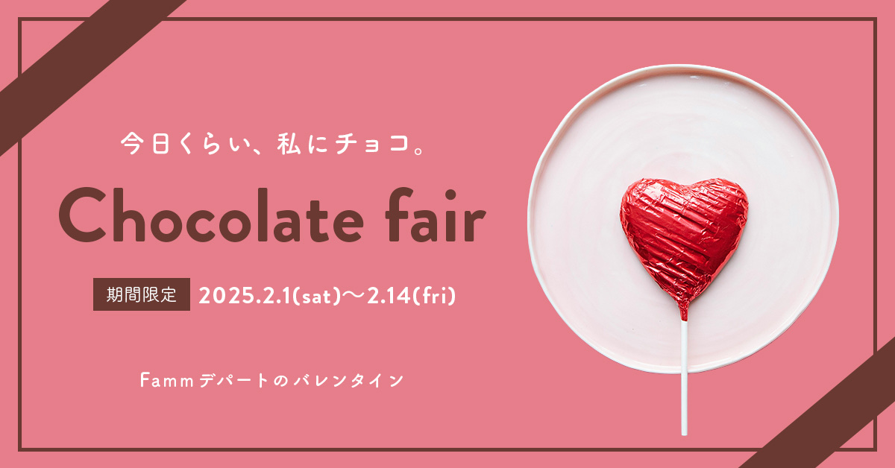

WORKS — バナーデザイン
Famm Chocolate Fair
Works 一覧に戻る

制作背景
ママ向けフォトスタジオ・学習サービスを提供するサービスのバレンタイン特集を想定した自主制作バナーです。期間限定のイベントバナーとして、チョコレートフェアの特別感とブランドの親しみやすさを両立させることを意識しました。
課題
「チョコレート・バレンタイン」という世界観の高級感・特別感を演出しながら、ターゲット（ママ層）に向けた柔らかさや親しみやすさも失わないビジュアルにすること。重厚になりすぎず、華やかで手に取りやすい印象が求められました。
アプローチ
ダークブラウン×ゴールドの配色でチョコレートの高級感・特別感を演出しました。一方で、丸みのあるレイアウトとやわらかいフォント選びによって、堅さを取り除き親しみやすさも保持しています。
背景に軽いテクスチャを加えることで、フラットなデザインに奥行きと温かみを加え、写真的な質感をバナー全体に持たせました。
工夫した点
テキスト量を最小限に絞り、ビジュアルで世界観を伝えることを優先しました。また、ゴールドのラインと余白を効果的に使い、情報が少なくても「特別感のある何か」だと直感的に伝わるデザインを目指しました。